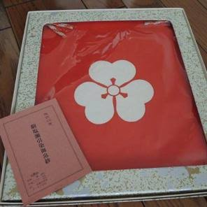

|
１．和田家 定紋赤旗之紋丸之内違矢筈 添紋片バミ籏の例  赤籏は、平家を意味し、カタバミは公家の出を意味するといわれる。 ２．高見家 高見家の家紋は初代和田庄五郎の実父和田兵衛尉（新九郎）の舅である高見助之丞の家紋（いわゆる里紋）を引き継いだ。 眞藤國雄氏の調査によると、家紋入り御侍帳では次の通り、丸の内三つ並び矢羽が定紋で、丸に小が添え紋のようである。
また、すでに熊本大学に寄贈したが、先祖伝来の朱印と刷り込み紋の画像が残されている。
下の画像は、刷り込み紋用の丸に違い矢羽である。
更に、熊本の高麗門妙立寺にある高見家之墓には丸に小の字の紋が彫られてある。
|